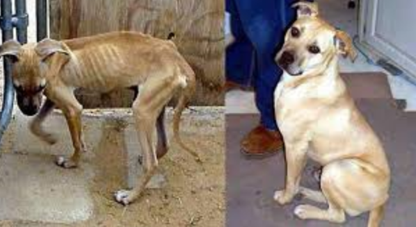

Campaign Page

This picture shows a dog when he was getting starved and a picture when he was rescued and adopted then fed correctly. A simple act that you can take to stop dog abuse is by simply adopting a dog instead of buying one from a breeder. The dogs at adoption center often get thrown back to the streets where they are then collected my leaders of dog fights;then the poor dogs are put to fight and often starved.
Steps To End Dog Cruelty
- Adopt Instead of Buying from a breeder
- See Something Report It
- Treat dogs as if they were children
- Get Involved with your local animal shelter
- Help a stray dog if you see one
- Dont scream at your dog
- Dont chain up your dog for more than an hour
- Simply dont hit your dog
- Report dog fights

Dog fights are a big leading cause of dog deaths around the United States. Not to mention they are higly illegal and are the reason dogs are dieing everyday.